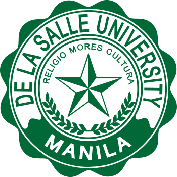

De La Sale University
From Wikipedia, the free encyclopedia
De La Salle University (Filipino : Pamantasang De La Salle, Unibersidad ng De La Salle), also known simply as La Salle and abbreviated as DLSU , is a private, Catholic research university run by the De La Salle Brothers located in Taft Avenue, Malate, Manila, Philippines. It was established in 1911 as the De La Salle College (DLSC) in Nozaleda Street, Paco, Manila with Br. Blimond Pierre FSC serving as first director. The educational institution moved to its present location in 1921 to facilitate the increase in enrollment. The college was granted university status on February 19, 1975 and is the oldest constituent of De La Salle Philippines (DLSP), a network of 16 Lasallian institutions established in 2006 to replace the De La Salle University System.
The university started as a boys' elementary and high school. In 1920 it began offering a two-year Associate in Arts Commerce program, which was later discontinued in 1931 in favor of a Bachelor of Science in Commerce program. DLSU currently offers coeducational undergraduate and graduate degree programs through its seven colleges and one school specializing in various disciplines, including business, engineering and liberal arts. Students and alumni from La Salle were previously referred to as Lasallites, but the term has since been changed to Lasallians.

Former name
De La Salle College
(1911-1975)
(1911-1975)
Motto
Religio, Mores, Cultura
(latin)
(latin)
Motto
in English
in English
Religion, Morals, Culture
Type
Private Roman Catholic